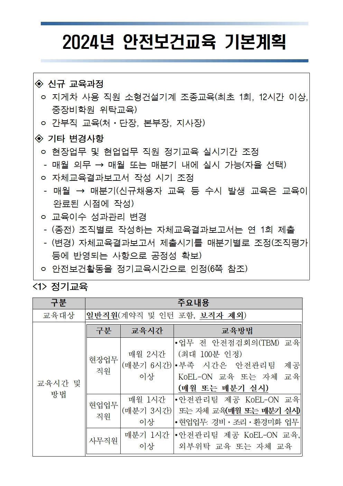

Q1) ‘24년 정기교육 관련해서 설명해주세요
A1) 검사원은 월 정기교육 시간 120분 중 테블릿 TBM활동으로 100분(1회당 5분 * 20일)을 인정해줍니다.
나머지 20분은 KoEL-ON에서 수강하거나 지사에서 수립한 안전보건교육계획에 따라 자체교육하면 됩니다.
또한 월 120분 또는 분기 360분 중 선택해서 교육시간을 채우시면 됩니다.
행정직은 분기별 60분 정기교육이 필요합니다. 정기교육 시간을 KoEL-ON에서 채우거나 지사에서 수립한
안전보건교육계획에 따라 자체교육하면 됩니다.
Q2) 월 근무일 수가 20일이 안되면 정기교육시간 100분 인정이 안되나요?
A2) 장기휴가 등으로 TBM활동 참여일수가 부족한 직원이 생길 경우 부서장 재량으로 교육시간을 충족할 수
있도록 추가 자체교육을 권장합니다.
Q3) 지사장, 팀장도 정기교육 대상자인가요?
A3) [NO] 정기 안전보건교육에 보직자는 해당되지 않습니다. 지사장은 간부직 교육(연 2시간), 팀장은 관리감독자
교육(연 4시간)을 받습니다. 해당 시기에 맞춰 안전관리팀에서 안내 공문을 발신합니다.
Q4) 개인별 KoEL-ON 교육 수강여부를 어떻게 확인하나요?
A4) 현재 시스템에서는 수강여부를 안전관리팀을 통해서만 확인 가능합니다.
Q5) 안전보건활동별 교육인정시간 중 체크리스트 방식이 뭔가요?
A5) 편리하고 합리적인 교육시간 인정을 위해 체크리스트 방식(10분), 안전퀴즈 방식(30분) 등 추가 활동을 안전관리팀에서
구상⸱개발 중에 있습니다. 추후 개발이 완료되면 안전관리팀에서 안내할 예정입니다.
